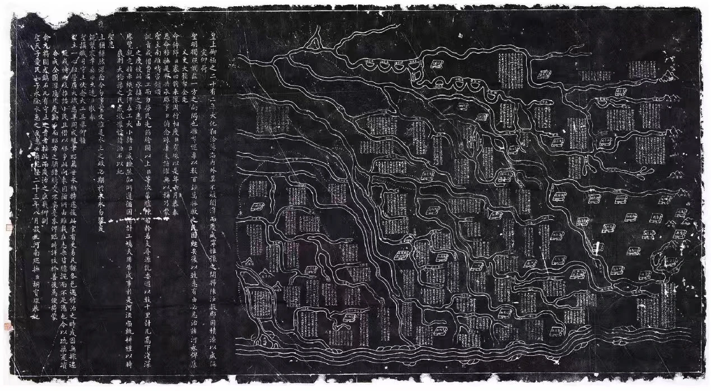

TREASURE 01
《开归陈汝水利图碑》
一碑载四府，一图系百川；既记工程始末，也存豫东水脉。
- 质地
- 青石
- 尺寸
- 高88、宽162、厚20厘米
- 级别
- 国家一级文物
乾隆二十二至二十三年间，开封、归德、陈州、汝宁四府多地遭遇严重水患。朝廷拨帑赈济，并由裘曰修、河南巡抚胡宝瑔主持疏浚工程。工程告成后，治水缘起、河道走向、沟渠尺度与二十八州县水系被合刻于石，成为纪功之碑，也成为后世查考河工的图籍。
图面约占碑刻三分之二，文字与舆图相互校验；河流、州县与工程段落彼此勾连，保存了十八世纪豫东水利治理的空间关系。它的重要性不只在雕刻精细，更在把一次跨府治水转化为可以反复阅读的制度档案。